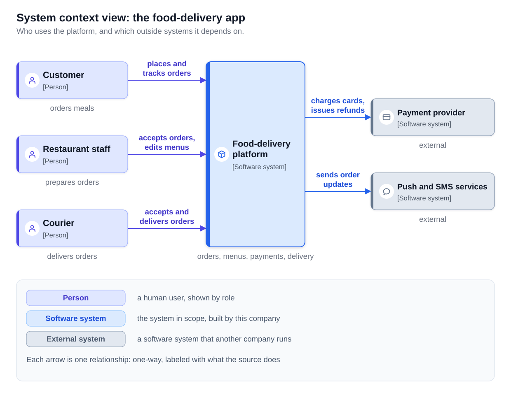
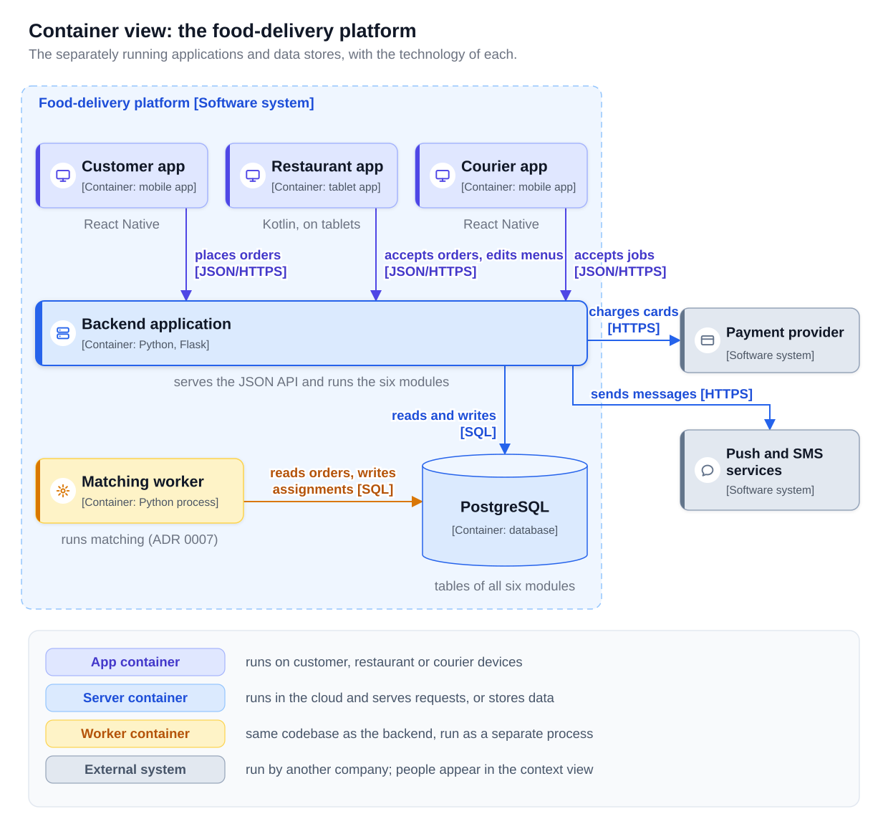
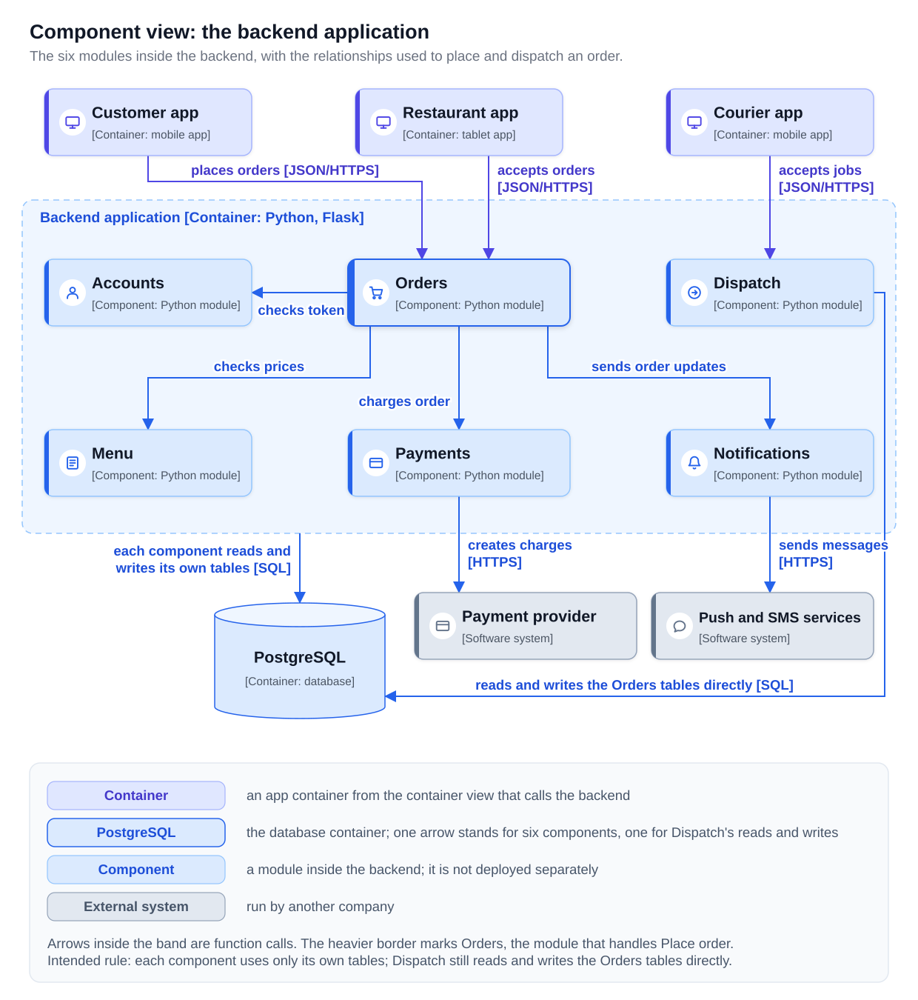
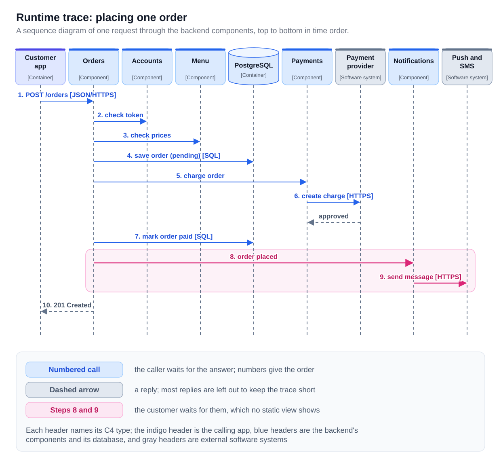
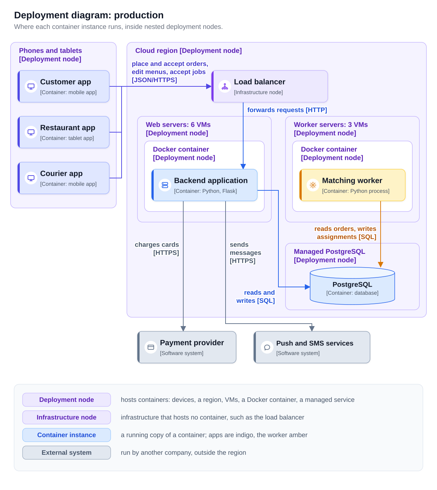

0% completed
Architecture Diagrams and Decision Records
On This Page
Know the Vocabulary
Part 1: The C4 Model and Its Terms
Why One Diagram Is Not Enough
The Terms, with the Food-Delivery App
The Notation Rules
Part 2: The System Context and Container Views
The System Context View
The Container View
Part 3: Component Views, Code, and Runtime Traces
A Component View, Drawn Selectively
The Code Level
Runtime Traces: Dynamic and Sequence Diagrams
Part 4: Deployment Diagrams and Common Diagram Mistakes
The Deployment Diagram
Common Diagram Mistakes
Part 5: The Chapter's ADR Template, with a Weak ADR and Its Rewrite
How the Template Extends the Earlier Form
A Weak ADR
The Rewrite
Part 6: ADRs in a Repository
Where the Files Live
Numbering
Superseding a Decision
Linking ADRs to Diagrams and Code
FAQs
Key Takeaways
Know the Vocabulary
This lesson uses the terms below repeatedly. Read them once now and return here when a later section needs one.
- C4 model: A way of drawing a software system at four levels of detail, created by Simon Brown: system context, container, component and code.
- Person: In C4, a human who uses the system, such as a customer or a courier.
- Software system: In C4, the highest-level element: something that delivers value to its users, such as the food-delivery platform or the payment provider.
- Container: In C4, a separately runnable or deployable unit that the system needs running, such as a web application, a mobile app or a database. It is not a Docker container.
- Component (in C4): A group of related code behind a well-defined interface inside one container, such as the Orders module. It is not deployed separately.
- Relationship: In C4, a one-way line between two elements, labeled with what the source does and, between containers, the technology used.
- Dynamic diagram: A C4 diagram that shows, as numbered steps, how elements work together at runtime for one feature or request.
- Sequence diagram: A diagram of one request that gives each element a vertical line and draws the messages between them from top to bottom in time order.
- Deployment diagram: A C4 diagram that shows where instances of each container run on infrastructure in one environment, such as production.
- Deployment node: Infrastructure that hosts software, such as a virtual machine, a Docker container or a managed database service. Nodes can contain other nodes.
- Architecture decision record (ADR): A short document that records one architecture decision with its title, status, context, decision and consequences.
- Revisit condition: A measurable condition, written in the decision record, that reopens the decision when it becomes true.
- Architecture test: An automated test that fails when the code breaks an accepted architecture decision.
A new engineer joins the Fulfillment team of the food-delivery app. On her first day she asks where courier matching runs, and why Dispatch is not a separate service. The team's only diagram is a whiteboard photo from 18 months ago, with boxes labeled "API", "DB" and "Worker?" and arrows without labels.
Answering her needs two kinds of document. Diagrams show the structure of the system at the level of detail that suits the question. Decision records show why the structure is the way it is, what it costs, and when to reconsider it.
This lesson teaches both: the C4 views of the food-delivery app, the ADR template this chapter uses, and how ADRs are kept beside the diagrams and the code.
Part 1: The C4 Model and Its Terms
Why One Diagram Is Not Enough
A product manager asks which outside companies the app depends on. A new engineer asks which programs run and how they talk, and an operations engineer asks which machines host them. One diagram that answers all three holds about 30 boxes at four levels of detail, and no reader can find their answer in it.
The C4 model, created by Simon Brown, uses a fixed set of levels instead. Each level shows the inside of one element from the level above.
- System context: the system as one box, with the people who use it and the systems it depends on.
- Container: the separately running applications and data stores inside the system.
- Component: the main groups of code inside one container.
- Code: the classes or tables inside one component.
The Terms, with the Food-Delivery App
Two C4 words, container and component, differ from their everyday meaning. The table below gives each term with a food-delivery example.
| C4 term | Meaning | Food-delivery example | Common confusion |
|---|---|---|---|
| Person | A human user, usually shown by role | Customer, restaurant staff, courier | One box per individual where a role would do |
| Software system | Something that delivers value to users, yours or another company's | The food-delivery platform; the payment provider | Drawing a module as a system |
| Container | A separately runnable or deployable unit, including data stores | Customer app, backend application, PostgreSQL | Treating it as a Docker container |
| Component | A group of code behind an interface, inside one container | Orders, Menu, Payments | Thinking it can be deployed alone |
| Relationship | A one-way, labeled dependency | Customer app places orders through the backend [JSON/HTTPS] | Unlabeled arrows, or heads at both ends |
A container is not a Docker container. A C4 container can be a web application, a mobile app, a worker process, a serverless function or a database. A Docker container is infrastructure, so it appears only in a deployment diagram, as a deployment node.
A C4 component is narrower than "component" in the Responsibilities and Boundaries lesson. That lesson uses the word for any part with its own responsibility, such as the Payments module or the Courier app. In C4, the Payments module is a component, but the Courier app is a container, because it runs on its own.
The Notation Rules
C4 does not prescribe shapes or colors, so any drawing tool works. It does recommend a short checklist, and this lesson's diagrams follow the four rules below from it. The checklist also asks for a short description of each element, which this lesson's diagrams give where space allows.
- Every element shows its name, its C4 type and, for containers and components, its technology, such as "[Container: Python, Flask]".
- Every relationship is one-way and labeled with what the source does. Between containers, the label also names the technology, such as "[JSON/HTTPS]".
- Every diagram has a title that states its type and scope, such as "Container view: the food-delivery platform".
- Every diagram has a legend (a key) that explains its colors, line styles and shapes.
Part 2: The System Context and Container Views
The views in this lesson show the app after ADR 0007 but before the payment worker of ADR 0011, from the Practical Architecture Decision Process lesson in this chapter. The card is therefore still charged during the request.
The System Context View
The system context view draws the whole platform as one box. Around it are the three kinds of person who use it and the two outside systems it depends on: the payment provider and the push and text message (SMS) services. The diagram below shows this view.

The view has six boxes and five arrows, so a reader without technical training can follow it. It answers who uses the system and which outside companies receive its data, so it shows no technology and no internal parts.
The Container View
The container view shows the inside of the platform box: six containers, the technology of each, and their relationships. The diagram below shows this view, which leaves out the persons and says so in its legend.

Three details follow from the definition of a container.
Each mobile app is a container. The three apps run on separate devices and are released separately through the app stores. They sit inside the platform boundary because the company builds them.
The matching worker is its own container, although it shares the codebase. In the Constraints and Trade-offs lesson, ADR 0007 moved the Dispatch matching loop onto three dedicated worker machines. The worker is built from the backend's code, but it runs as a separate process that can be started and stopped on its own.
The six modules are not containers. Orders, Menu, Payments, Dispatch, Notifications and Accounts all run inside the one backend process. They are components, and they appear in the next view.
As a test, if the system needs something running, and it runs as its own process or stores data on its own, it is a container.
Part 3: Component Views, Code, and Runtime Traces
A Component View, Drawn Selectively
The component view shows the inside of one container. Brown recommends drawing it only where it adds value, because it changes whenever the code is reorganized. The table below applies that rule to the food-delivery containers.
| Container | Component view? | Reason |
|---|---|---|
| Backend application | Yes | Six modules, three teams, and dependencies that new engineers get wrong |
| Matching worker | No | One component: the matching loop |
| Customer, Restaurant and Courier apps | No | Their structure follows the mobile framework's standard layout |
| PostgreSQL | No | Its structure is the schema, which a schema tool shows better |
The diagram below shows the component view of the backend application.

Each component is meant to read and write only its own tables in PostgreSQL, and six identical arrows would hide the module dependencies this view exists to show. The view therefore draws one labeled arrow from the container boundary to PostgreSQL, and the legend says it stands for six. Leaving PostgreSQL out would make the view wrong rather than shorter. The view draws the intended dependencies and one known exception as its own arrow: Dispatch still reads and writes Orders tables directly. It reads them in the 14 queries that the What Software Architecture Is lesson describes, and it writes each courier assignment into the orders table.
The Code Level
The fourth level shows the classes or tables inside one component. Brown advises drawing it rarely, because code changes every week and development tools generate class diagrams on request.
Runtime Traces: Dynamic and Sequence Diagrams
The views so far are static: they show which element can call which, but not the order of the calls in one request. A runtime trace shows that order.
C4 offers the dynamic diagram, which draws the elements of a container or component view in any arrangement and numbers each arrow in call order. The same steps can be drawn as a sequence diagram instead. The sequence form is easier to read when a request has more than about six steps, or when the replies matter.
The diagram below traces a Place order request through the backend's components, at the dinner peak of about 2 orders per second.

The trace shows something the static views do not. The component view shows that Orders calls Notifications, but not when. In steps 8 and 9, Notifications sends a message through the push and SMS services before step 10 answers, so every customer waits for that call. The illustrative latency budget in the Quality Attributes lesson has no line for it. Part 5 records the decision that removes it.
A drawn trace states what the design intends. In a system of services, distributed tracing (tagging each request with a trace ID that every service forwards in outbound calls and writes to its logs) records what actually happens, as the Microservices Architecture lesson explains.
Part 4: Deployment Diagrams and Common Diagram Mistakes
The Deployment Diagram
A deployment diagram shows where instances of each container run in one environment. It draws the deployment topology, the map of which parts run on which machines, that the N-Tier Architecture lesson describes. Deployment nodes nest: a cloud region holds virtual machines, and each virtual machine holds a Docker container that runs one container instance.
The diagram below shows the production environment of the food-delivery app.

The backend runs as 6 instances behind a load balancer, and the matching worker runs as 3 instances on their own machines, as ADR 0007 decided. Everything runs in one cloud region against one PostgreSQL instance, so a region outage or a database failure stops ordering. Staging, the test copy of production, usually has fewer instances, so each environment gets its own deployment diagram.
Common Diagram Mistakes
The table below gives five common faults, each with a food-delivery example and its fix.
| Mistake | Example | What the reader cannot tell | Fix |
|---|---|---|---|
| Mixed levels | The Customer app, the Orders module, an OrderRepository class and a Docker container in one picture | Which boxes run separately and which are code inside another box | One C4 level per diagram; infrastructure only in deployment diagrams |
| Unlabeled arrows | A bare line between Orders and Payments | Who calls whom, and whether the caller waits | "charges order [function call]", one direction |
| Boxes with no technology | "Backend" and "Database" | The language, the protocol, the database product | "[Container: Python, Flask]", "PostgreSQL [Container: database]" |
| No legend | Two arrow colors and a dashed box | Whether dashed means asynchronous, planned or external | A legend panel in every diagram |
| No title or scope | An untitled image on a wiki page | Which system, level and environment it shows | "Deployment diagram: production" |
A sixth fault is age. A diagram that no longer matches the system misleads readers who trust it, so Part 6 stores diagrams in the repository with the code.
Part 5: The Chapter's ADR Template, with a Weak ADR and Its Rewrite
How the Template Extends the Earlier Form
The Constraints and Trade-offs lesson explains what an ADR is, its statuses, and why an accepted ADR is not edited. This chapter keeps that form and adds three fields, as the table below shows.
| Field | What it holds | Change from the earlier form |
|---|---|---|
| ADR NNNN: title | The decision as a short imperative phrase | Unchanged |
| Status | Proposed, Accepted, Deprecated, or Superseded by ADR NNNN | Unchanged |
| Context | The problem with numbers; the requirements and constraints that matter | The options move out |
| Options Considered | Two or three options, each with its main gain and main cost | New; previously inside Context |
| Decision | What the team will do, stated so someone could check it was done | Must now be checkable |
| Consequences | What gets better, what gets worse, what it costs | Revisit conditions move out |
| Assumptions | Facts the decision relies on that could turn out false | New |
| Revisit When | Measurable conditions that reopen the decision | New; previously inside Consequences |
ADR 0007 held most of this information, mixed into two paragraphs. Separate fields let a reviewer confirm that every option has a real cost, and let a monitoring alert watch each revisit condition.
A Weak ADR
The trace in Part 3 showed that every order waits for the push and SMS services. An engineer on the Ordering team opened the draft below for review.
ADR 0021: Use a queue for notifications
Status: Proposed.
Context: Notifications are slow and sometimes fail, which affects ordering.
Decision: We will move notifications to a queue, because queues are more scalable and decouple the modules.
Consequences: Ordering will be faster and more reliable.
Every sentence sounds reasonable, and none can be checked. The reviewers found six problems.
- No numbers. "Slow" and "sometimes" set no target, so nobody can tell later whether the change worked.
- No options. A reader cannot tell whether a timeout or a message broker was considered.
- An uncheckable decision. "A queue" could be a broker, a table or a list in memory.
- Generic reasons. "Scalable" and "decouple" are true of every queue, so they explain nothing here.
- Only benefits. Messages will arrive later and may be sent twice, and the draft hides both.
- No assumptions or revisit conditions. Nothing tells a future team when to reopen the decision.
The Rewrite
The team measured production and rewrote the record in the chapter's template. All figures are illustrative.
ADR 0021: Send notifications from a worker process, not from the order request
Status: Accepted.
Context: Placing an order calls Notifications inside the request, and Notifications calls the push and SMS services over HTTPS before the customer gets an answer. At the dinner peak of about 2 orders per second, the services normally answer within 60 ms at p99. On 9 evenings in the last 30 days, their p99 rose above 1,500 ms, and order placement p99 exceeded its 500 ms target. During one 20-minute outage of the services on a weekday afternoon, 610 requests failed after the order was saved and the card charged. Of those customers, 104 placed the same order twice. No one on the team has operated a message broker, and about $2,300 per month of budget remains.
Options Considered: Option 1 keeps the call in the request with a 150 ms timeout. It takes one day and adds no parts, but timed-out messages are lost and orders still wait up to 150 ms. Option 2 saves a notification job in the order's transaction and sends it from a worker process. Ordering stops waiting for the services and needs no new infrastructure, but messages arrive 1 to 3 seconds later and can be sent twice. Option 3 publishes order events to a managed message broker. It scales furthest and other modules can use the events, but it costs about $400 per month, takes 5 weeks and needs new skills.
Decision: We choose option 2. Orders will insert a row into a notification_jobs table in the same transaction that saves the order, and will not call Notifications during the request. A new notification worker process, from the same codebase, will run on the three worker machines from ADR 0007. It reads new jobs every second, sends each one and marks it sent. Only the notification worker may import the push and SMS client, which the architecture test test_adr_0021 enforces. The container view, the Place order trace and the deployment diagram change in the same pull request.
Consequences: A slow evening for the push and SMS services no longer raises order placement p99 above 500 ms. An outage of the services delays messages instead of failing orders. Restaurants receive new-order messages 1 to 3 seconds later than today. A worker that crashes between sending a message and marking it sent will send it again, so a restaurant may occasionally see a duplicate. The work takes about two engineer-weeks and adds no infrastructure cost.
Assumptions: Restaurants accept a delay of up to 5 seconds for new-order messages (restaurant support tickets, first 30 days). Matching uses about 40 percent of the worker machines' CPU at the peak, leaving room for the new process (worker CPU dashboard). Reading the jobs table every second adds less than 2 percent to database CPU (database CPU dashboard, first week).
Revisit When: Notification jobs exceed 8 per second at the peak, four times today's 2 (job rate dashboard; Fulfillment team). The p95 delay from saving an order to sending its message exceeds 10 seconds on 3 evenings in one month (notification delay metric; Fulfillment team). A second module needs to react to placed orders (design review proposals; Fulfillment team).
Each problem now has an answer. Every number in Context can be checked on a dashboard, and a reviewer can confirm the table, process, test and three diagrams that the Decision names. Option 2 uses the idea of the outbox pattern (writing each event to an outbox table in the same transaction as the business data), which the Event-driven Architecture lesson explains.
Part 6: ADRs in a Repository
Where the Files Live
The Constraints and Trade-offs lesson keeps ADRs as numbered files beside the code. The table below shows the food-delivery team's full layout.
| Path | What it holds |
|---|---|
| docs/adr/0021-send-notifications-from-a-worker.md | One ADR per file, numbered at the start of the name |
| docs/adr/README.md | An index of every ADR with its number, title and status |
| docs/architecture/workspace.dsl | The C4 model and all its views as text, in Structurizr DSL |
| tests/architecture/test_adr_0021.py | The architecture test that enforces ADR 0021 |
Diagrams kept as text, in a format such as Structurizr DSL (the text format of Brown's Structurizr tool) or PlantUML, share one benefit. A diagram change appears as a readable difference in the same pull request as the code. Structurizr DSL adds a second, because all of its views come from one model, so a renamed container changes in every view.
Numbering
Numbers have four digits and increase by one. A number is never reused, even for a withdrawn proposal, because commit messages may already cite it. When two branches propose the same number, the one merged second takes the next free number.
Superseding a Decision
Suppose that 14 months later, notification jobs reach 10 per second at the peak, and a new loyalty feature must react to placed orders. Two of the revisit conditions are now true.
The team writes ADR 0024, "Publish order events through a managed message broker". Its Context cites the two conditions of ADR 0021 that became true. Once ADR 0024 is accepted, exactly one line of ADR 0021 changes.
Status: Superseded by ADR 0024.
A reader who opens ADR 0021 still sees its original reasoning, plus the number of the decision that replaced it. A decision that stops applying with nothing to replace it gets the status Deprecated instead. If the company stopped sending new-order messages altogether, ADR 0021 would become Deprecated.
Linking ADRs to Diagrams and Code
The team links each ADR to the parts it affects, and back, in four ways.
- ADR to diagrams: the Decision names every view it changes, as ADR 0021 does.
- Diagram to ADR: an element shaped by a decision cites it, such as "runs matching (ADR 0007)" under the matching worker.
- Code to ADR: a one-line comment where the decision shows, such as "notifications are sent by the worker (ADR 0021)" in the order-saving function.
- ADR enforced by code: an architecture test, named after the ADR, fails the build when the code breaks the decision.
The code below is the architecture test for ADR 0021. It checks every module and fails if code outside the notification worker depends on the push and SMS client. The Python, JavaScript and Go versions read the import statements in the source files, and the Java and C# versions inspect the compiled classes with an architecture-testing library.
The test turns one sentence of the Decision into a check on every commit. Calling the client from Orders now fails the build with a message that names ADR 0021.
FAQs
Q: Does every system need all four C4 levels?
No. Brown suggests that a context view and a container view are enough for most teams, and Part 3 explains when a component view is worth adding.
Q: Is a serverless function or a message broker a container?
A serverless function is a container, because it runs separately and the system needs it. For a message broker, Brown advises drawing each queue or topic as a container, since each one stores messages, rather than the broker as one box.
Q: Which decisions deserve an ADR?
Architecture decisions, which the What Software Architecture Is lesson separates from detailed design by scope, cost of change and reversibility. A decision inside one module that one engineer can undo in a day needs no record.
Q: What if the code no longer matches an accepted ADR?
Either the code is wrong and the team fixes it, or the decision has changed and a new ADR supersedes the old one. Leaving the two in disagreement misleads every later reader.
Key Takeaways
- The C4 model has four levels: system context, container, component and code, each showing the inside of one element from the level above.
- A C4 container is a separately runnable or deployable unit, not a Docker container. The matching worker is its own container, although it shares the backend's code.
- Draw component views selectively for the containers whose structure people get wrong, and draw the code level rarely.
- Use runtime traces for single requests and deployment diagrams for infrastructure. The Place order trace showed that every customer waits for Notifications, which no static view shows.
- The chapter's ADR template adds Options Considered, Assumptions and Revisit When to the earlier form. Every field must be specific enough to check, with numbers, real costs and conditions a dashboard can watch.
- Keep ADRs and diagram sources in the repository. Never reuse a number, supersede instead of editing, and link each ADR to its diagrams and tests.
0 Comments
No comments yet. Be the first to start the discussion!
Reading Progress
0%
On This Page
Know the Vocabulary
Part 1: The C4 Model and Its Terms
Why One Diagram Is Not Enough
The Terms, with the Food-Delivery App
The Notation Rules
Part 2: The System Context and Container Views
The System Context View
The Container View
Part 3: Component Views, Code, and Runtime Traces
A Component View, Drawn Selectively
The Code Level
Runtime Traces: Dynamic and Sequence Diagrams
Part 4: Deployment Diagrams and Common Diagram Mistakes
The Deployment Diagram
Common Diagram Mistakes
Part 5: The Chapter's ADR Template, with a Weak ADR and Its Rewrite
How the Template Extends the Earlier Form
A Weak ADR
The Rewrite
Part 6: ADRs in a Repository
Where the Files Live
Numbering
Superseding a Decision
Linking ADRs to Diagrams and Code
FAQs
Key Takeaways